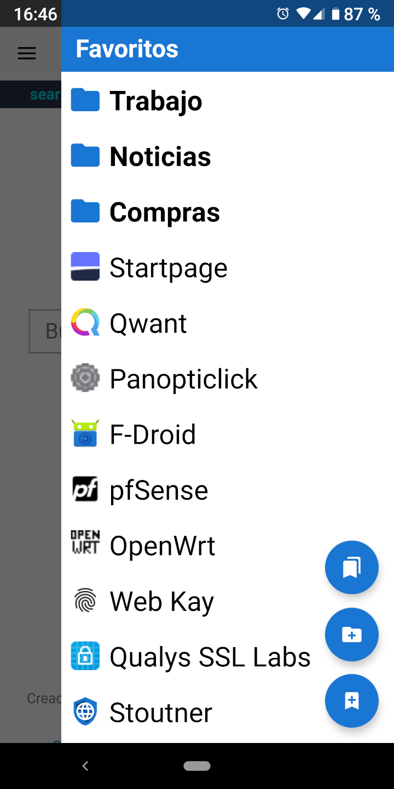

Favoritos Favoritos
Favoritos FavoritosSe puede acceder a los favoritos en un diseño de cajón deslizando desde la derecha de la pantalla.
Al tocar el botón de acción flotante superior se carga la actividad de favoritos, que tiene opciones avanzadas como mover y eliminar favoritos. Desde la actividad de favoritos, hay una opción para cargar la vista de base de datos de favoritos. Esto muestra los favoritos tal y como existen en la base de datos SQLite, lo que puede ser útil para solucionar problemas de importación y exportación de favoritos.